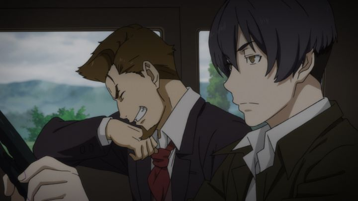

I typically enjoy when a Japan-produced anime is set in old-time America. "91 Days" is one such show, set in the bootleg-era, in the early 1900s. Inspired by classic gangster movies (think "The Godfather"), it's a story of revenge from the sole survivor of a hit by a local Mafia gang. It's confident with its style and genre, and that goes a long way to help sell the series, flaws not withstanding.The first episode opens with the key murder: when playing hide-and-seek, two children, while peeking out of the closet, witness their father and mother get shot by a mafia gang. The father was a member of the gang, but had lost trust from his boss. In panic, one child runs out to get murdered the same way, and the other barely manages to escape the house, hiding for the remainder of his childhood at the home of his best friend. It's a tragic and traumatic event, and Angelo, the surviving son, never quite forgot it. Barely living out an existance as a teenager, he one day receives a mysterious letter, from an anonymous stranger, listing out the names of the people present that day on the night of his family's murder. In that moment, Angelo smiles with a mad glint in his eye. This was exactly what he needed to give his life purpose again, to exact revenge, and avenge his family. His old friend happens to be a talented moonshine chef, selling the alchohol made in his apartment to speak-easy's at a time when it was outlawed. He can use that to get in with the mob family where the killers reside, getting on their good side until the time is right to take all three men out, without getting caught until the job is done.So far, great! Angelo's hidden motivations make the show feel like "Death Note" mixed with "Baccano!," a pretty good combination. He's a straight-forward character with little emotion, and is a natural for the dirty work the gang ultimately has him do. It's only a matter of time before his revenge is carried out... right?Despite appearing like a tightly planned show (planned right to the number of days that pass), I couldn't help but feel that the show dragged its feet a lot, zig-zagging with episodic adventures to avoid hitmen or the police, or double and triple-crosses among multiple gangs that didn't seem necessary or interesting. Surely, it wouldn't be that hard to kill three people, compared to the amount of work he goes through wating for the perfect moment? Angelo does get another reason to hold out: a few episodes in, he learns there were FOUR men, not three, and bides his time until he can uncover the final person. Even with the diversions, a lot happens in each episode to give you your money's worth, and knowing from the start what Angelo is secretly planning makes several scenes far more intense and intriguing than they would be otherwise. Plot aside, my biggest issue was the pacing and mismatched tones. "91 Days" should have been a strict mystery-thriller, but often throws in scenes of light humor and comedy. Sometimes these laid-back moments last most of an episode, and sometimes a quick visual gag or facial expression is thrown in for barely a second. It's an odd creative decision, and one that hardcore fans might grow to admire, but I wasn't sold on it. And when too much time is spent on it, it further increases the odds of me slumping in my chair, yawning, wondering "why hasn't Angelo just killed them by now?"The ending is reasonable, and how Angelo's revenge is exacted in the last moment is clever, but chances are you can guess the ending before watching anything. There aren't many ways this could end. The entertainment is in the suspense of it all. Therefore, it's not the type of show you can rewatch again and again to get the same value. And it ends at episode 12: episode 13 is just an OVA, a combination of extra scenes to give further characterization, but not important at all. The production was reasonably done. It looks like it was animated by Madhouse, which would have been appropriate (again, they did "Dead Note"), but was actually by Shuka, a relatively new studio with only a handful of shows under its belt. Both the visuals, music and voice acting (Funimation's English accent-heavy dub in particular) all sell the old-time American setting well. Animation varies a bit more, sometimes being quite decent, but with a lot of subpar scenes if you pay attention.If you watch some commentary or read forum reviews of the show from back when it aired, you get a few more clever facts and hidden jokes: for example, by having 13 episodes air every week on television, the broadcast lasts exactly 91 days. Indeed, "91 Days" is the type of show best watched week by week, discussing the events with friends in between, with limited rewatch value. And some odd writing choices prevent it from being a classic, like the American mafia movies that inspired it. It, itself, was a fun and engrossing diversion.
- "Ani" More reviews can be found at : https://2danicritic.github.io/ Previous review: review_5_Centimeters_per_Second Next review: review_A_Boy_Named_Charlie_Brown